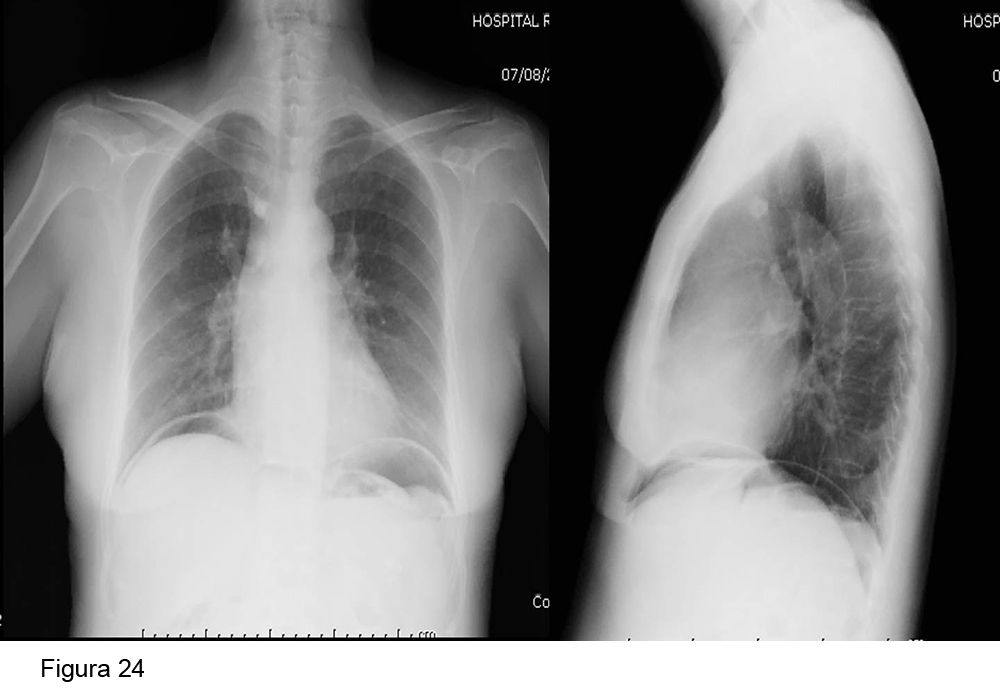

<div class="pages">
  <div data-page="projects" class="page no-toolbar no-navbar">
    <div class="page-content">
    
     <div class="navbarpages">
       <div class="navbar_home_link"><a href="toogle.html"></a></div>
       <div class="navbar_page_center"><b>Especialidades</b></div>
       <div class="menu_open_icon_white"><a href="#" class="open-panel"></a></div>
     </div>
     <div id="pages_maincontent">

          <h2 class="page_subtitle">Diálisis Peritoneal - Complicaciones no infecciones </h2>
          <p><b>Autor/a:</b> Haridian Sosa y Maite Rivera. Servicio de Nefrología - Hospital Ramón y Cajal, Madrid</p>
          <div class="page_single">         
              <div class="buttons-row">
                    <a href="#tab3" class="tab-link active button">Dolor lumbar</a>
                    <a href="#tab4" class="tab-link button">Dolor abdominal</a>
                    <a href="#tab5" class="tab-link button">RGE y retraso</a>
                    <a href="#tab6" class="tab-link button">Neumoperitoneo</a>
              </div>
              
              <div class="tabs-simple">
                    <div class="tabs">
                        <div id="tab3" class="tab active">
                              <br />
                              <h4>Dolor lumbar</h4>
                              <p class="justify">
                                  La infusión de líquido en la cavidad peritoneal conlleva un aumento de la presión intraabdominal y cambia la estática de la columna al mover el centro de gravedad del individuo (aumento compensatorio de lordosis). Esto puede generar molestias lumbares, contracturas musculares, ciática y afectación de discos vertebrales/vértebras.<br /><br />
La intensidad depende de la posición del paciente (sedestación > bipedestación > supino),  del volumen instilado,  edad, índice de masa corporal, uso de prensa abdominal (tos, estreñimiento).<br /><br />

Recomendaciones:<br />
 
                                - Ejercicios que fortalezcan la columna.<br />
                                - Resolver problemas de la columna (hernia de disco, estenosis del canal medular...).<br />
                                - Disminuir el volumen de los intercambios.<br />
                                - Paso a DPA con día seco/bajo volumen por intercambio.<br />
                                - Paso a HD si no se consigue mejoría.

                              </p>   
                      </div>
                      <div id="tab4" class="tab">
                              <br />
                              <h4>Dolor abdominal a la infusión</h4>
                              <p class="justify">
                                  El dolor abdominal a la infusión es un síntoma importante que hemos de  caracterizar ya que puede presentarse por diversas causas.<br />

                                - Causado por el líquido: pH ácido, líquido no precalentado o glucosa hipertónica. <br />
                                - Causado por el catéter: malposición (diagnóstico: RX simple de abdomen).<br /><br />
                                
                                Tratamiento:<br />
                                
                                - Calentar el líquido de DP<br />
                                - Bolsas con pH más elevado (bicamerales)<br />
                                - Evitar bolsas hipertónicas<br />
                                - Recolocar catéter<br /><br />
                                
                                Actitud:<br />
                                
                                - Resolver malposición (maniobra alfa con guía bajo control radioscópico, laxantes...)<br />
                                - El uso de soluciones de DP con pH más fisiológicos (Nutrineal® pH 6,4 o Physioneal® pH 7,4 con lactato y bicarbonato, de Baxter®, o Balance® pH 7 y Bicavera® pH 7, de Fresenius) suele mejorar el dolor a la infusión, así como el ajuste del contenido de glucosa de las bolsas siempre que se mantenga una diálisis adecuada.

                      </div> 
                      <div id="tab5" class="tab">
                              <br />
                              <h4>RGE y retraso del vaciamiento gástrico</h4>
                              <p class="justify">
                                  Puede presentarse clínica de reflujo, sensación de plenitud abdominal, náuseas y disconfort hasta en un 20-40% de los pacientes, principalmente aquellos en técnica manual. Dicha clínica suele remitir espontáneamente unas pocas semanas tras el inicio de la técnica.<br />
En caso de no ser así:<br /><br />

                                - Reflujo gastroesofágico → medidas generales higiénico-dietéticas. Minimizar volumen de intercambios en supino.<br /><br />
                                - Retraso de vaciado → por posible causa mecánica y neurogénica, aunque se desconoce. Más frecuente en diabéticos. Puede complicarse con bezoar. Tratamiento: Metoclopramida primera línea oral. Eritromicina segunda línea oral.

                              </p>
                      </div> 
                      <div id="tab6" class="tab">
                              <br />
                              <h4>Neumoperitoneo</h4>
                              <p class="justify">
                                  La presencia de pequeñas cantidades de aire libre en cavidad peritoneal (neumoperitoneo) es frecuente en DP. Se debe a un incorrecto purgado de las líneas del sistema de DP. Suele ser de pequeña cuantía y asintomático. En ocasiones produce dolor en hombro, uni o bilateral por irritación diafragmática. Suelen ser un hallazgo en la RX de tórax (aire subdiafragmático) (Figura 24). No requiere tratamiento, sólo reentrenamiento. Hay que descartar perforación de víscera hueca, sobre todo si coincide con peritonitis, especialmente polimicrobiana,  o es de gran tamaño.<br /><br />
                        </p>
	                </div> 
              </div>        
          </div>     
      </div>  
    </div>
  </div>
</div>